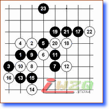

最近在网上看了很多关于“如何计算”这方面的帖子，我也结合自己的体会和初学者交流交流，希望对入门有所帮助。一直以来国内很多棋手推荐初学者入门,都是些基本的必胜开局定式，其实并非让你机械的背定式，而是在短小精悍的攻防中学习基本的技巧和棋形要点。如果能做到举一反三融会贯通，辅以一定的计算，将会在实战中发挥巨大的作用。
例如下面的例子：
图一
是花月必胜定式的一个变化，除了要学习正确的手顺外，还要熟练棋形结构，对初学者来说往往认为手顺比棋形重要。
我经常见很多爱好者在网上对弈喜欢打开数字手顺，很多实战棋手都不看手顺。但对各种开局的关键点却记得很牢，比如在棋盘上拆棋时候，要回到某一手棋，就随手拨开无关的棋子，剩下到那手棋的棋形。这比每次都从头摆一遍不但效率高，而且记忆的方式也有很大的区别，一种是以行棋的次序记，一种是以棋形的结构记，两者的反映速度和组合效率相差很大。
经常会碰到这样的情况，实战中如果你把棋形颠倒下，往往有些人就感觉不舒服，一定要调整到他习惯的方向才好。这种情况大多是平时打谱时记忆手顺，忽略了棋形结构。导致一旦棋形位置发生变化，而带来某种不适应。
图二
是云月一打必胜定式，如果你不知道正确的11，黑棋无法取胜。但如果你对图一棋形很熟练，就能发现这两个图在棋形上的相似之处。进而再比较两者的差异，往往很多时候这种比较几乎不用去刻意思考，就能马上找到类似参考棋形。你所掌握的基本棋形越多，那么你对局面的感知和控制也就越强。例如本图，或许别人还在计算黑9能否追胜时，你已经在思考11后的变化了。就结果而言这两图黑都能胜。
再看个例子：
图三
是云月二打的必胜下法，虽然后面变化有些多，但如果学习过，那么，对此型首要的认识是黑7黑胜。
图四
，现在黑必胜是A？B？一目了然吧。或许A点也能胜，但你判断的速度要比实战计算A点是否能胜快。实战很多情况下要受到时间因素的制约。

本图是斜月基础定式一型
本图是第十届世锦赛
A组第五轮山口执黑vs冈部，如果你熟悉这两个图的其中一个棋形，获胜就非常简单。但如果你只是机械的记忆每个开局的手顺，那么结果或许就不一样了。
我们将本图与图五和图六做个比较，轮到黑棋下。下一步的要点？
本图是上图的寒星必胜定式手顺，大家自行做个比较吧。
恩啊！抓住棋的棋筋和棋形，胜利就不远了啊！
不错，总结经验还是有帮助的！！
...
看不懂~！！
［ 雨一直下 于 2009-8-26 16:39:02 时奖励此帖[金币加 20 威望加1］
威望为0，加1
棋形
终于找到这样的文章了